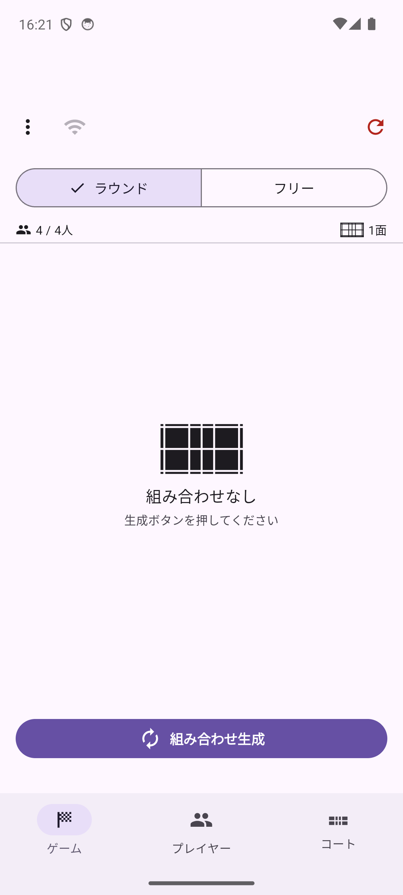
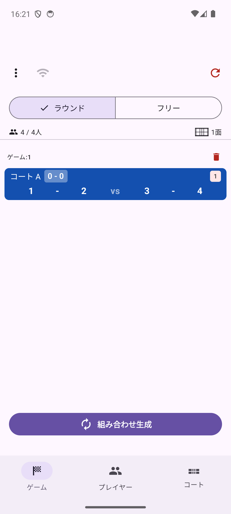
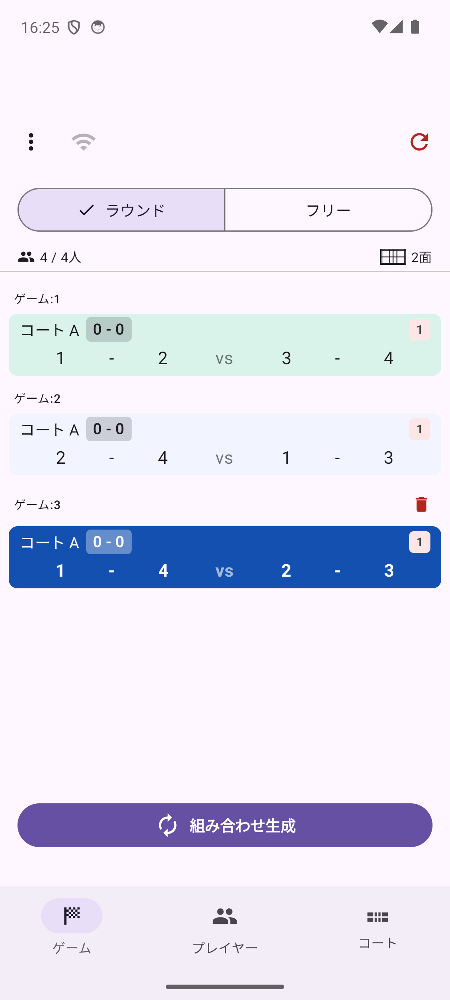

くみあぷ（PairGen）は ゲーム・プレイヤー・コート の3つのタブで構成されています。まずは基本の流れを試してみましょう。

プレイヤー タブを開きます。画面下部の ＋ / － ボタンでプレイヤー数を増減できます。
初期状態では「1」「2」「3」…という番号が名前として割り当てられています。名前を変えるには、プレイヤー行をタップして編集画面を開いてください。
画面上部のテキストフィールドに名前を入力して 追加 をタップすると、名前付きでプレイヤーを追加することもできます。カンマ区切りで複数名を一度に入力できます（例：Alice, Bob, Carol, Dave）。
コート タブを開きます。画面下部の ＋ / － ボタンでコート数を調整してください。
ゲーム タブを開いて 組み合わせ生成 ボタンをタップします。プレイヤーが各コートに自動で割り当てられます。

ボタンをタップするたびに次のラウンドの組み合わせが追加されます。重複が少なくなるよう自動的に調整されます。
プレイヤータブで各プレイヤー行右端のトグルが出場状態を表します。トグルをオフにすると休憩中となり、そのプレイヤーは次の組み合わせから除外されます。復帰するときはトグルをオンに戻してください。

ゲームタブで、最後のラウンドの行の右端にあるゴミ箱アイコンをタップすると削除できます（削除できるのは直近のラウンドのみです）。プレイヤーの出場回数なども元の状態に戻ります。

ゲームタブ右上の ↻（リセット）アイコンをタップすると、プレイヤーリストと試合結果がすべてリセットされます。